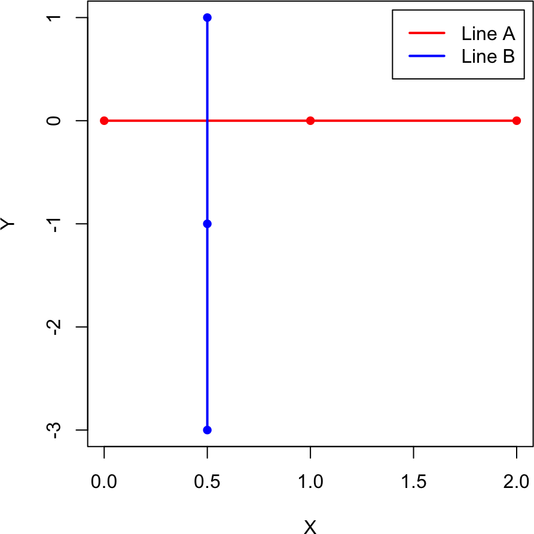
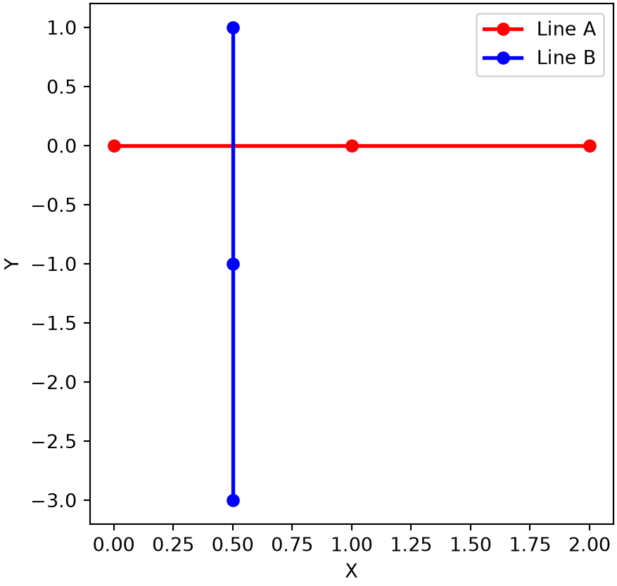

find_intersection <- function(lineA, lineB, nA, nB) {
dAX <- lineA[nA + 1, 1] - lineA[nA, 1] # segment A direction
dAY <- lineA[nA + 1, 2] - lineA[nA, 2]
dBX <- lineB[nB + 1, 1] - lineB[nB, 1] # segment B direction
dBY <- lineB[nB + 1, 2] - lineB[nB, 2]
dABX <- lineB[nB, 1] - lineA[nA, 1] # offset between the two starts
dABY <- lineB[nB, 2] - lineA[nA, 2]
d <- dAX * dBY - dAY * dBX # cross product (shared denominator)
alpha <- (dABX * dBY - dABY * dBX) / d
beta <- (dABX * dAY - dABY * dAX) / d
if (alpha * (1 - alpha) >= 0 && beta * (1 - beta) >= 0) { # both in [0, 1]?
c((1 - alpha) * lineA[nA, 1] + alpha * lineA[nA + 1, 1], # intersection X
(1 - alpha) * lineA[nA, 2] + alpha * lineA[nA + 1, 2], # intersection Y
1) # 1 = found
} else {
c(alpha, beta, 0) # 0 = not found
}
}3B. Steady states in 2D
With the two nullclines of Part 3A in hand, the steady states of the toggle switch are exactly the points where the curves cross: there both \(dX/dt = 0\) and \(dY/dt = 0\). This section covers how to locate those intersections numerically and how to classify the stability of each steady state from the Jacobian.
3B.1 Intersection of two line segments
Each nullcline is stored as a series of 2D points, \((\mathbf{A_1}, \mathbf{A_2}, \dots, \mathbf{A_n}, \mathbf{A_{n+1}}, \dots)\) for curve \(A\) and \((\mathbf{B_1}, \mathbf{B_2}, \dots)\) for curve \(B\), where \(\mathbf{A_n} = (X(A_n), Y(A_n))\) is the \(n\)-th point along \(A\). The nullclines null1 and null2 computed in Part 3A are two such curves. Between consecutive points the curve is well approximated by a straight segment, so the basic building block is to test a single pair of segments, \((\mathbf{A_n}, \mathbf{A_{n+1}})\) and \((\mathbf{B_n}, \mathbf{B_{n+1}})\): do they cross, and if so, where? The figure below shows the two possibilities, intersecting (left) and not intersecting (right).
Any point \(\mathbf{C}\) on the segment from \(\mathbf{A_n}\) to \(\mathbf{A_{n+1}}\) can be written as
\[ \mathbf{C} = \mathbf{A_n} + \alpha (\mathbf{A_{n+1}} - \mathbf{A_n}) \tag{1} \]
The parameter \(\alpha\) runs from \(0\) to \(1\) across the segment; values outside \([0, 1]\) lie beyond the two endpoints. If \(\mathbf{C}\) also lies on the segment from \(\mathbf{B_n}\) to \(\mathbf{B_{n+1}}\), then
\[ \mathbf{C} = \mathbf{B_n} + \beta (\mathbf{B_{n+1}} - \mathbf{B_n}) \tag{2} \]
Subtracting Equation (2) from Equation (1) gives a linear system with two unknowns \(\alpha\) and \(\beta\) and two component equations,
\[ \alpha (\mathbf{A_{n+1}} - \mathbf{A_n}) - \beta (\mathbf{B_{n+1}} - \mathbf{B_n}) = \mathbf{B_n} - \mathbf{A_n} \tag{3} \]
To isolate \(\alpha\), take the dot product of both sides with a vector perpendicular to \(\mathbf{B_{n+1}} - \mathbf{B_n}\), which cancels the \(\beta\) term. For a 2D vector \(\mathbf{V} = (V_X, V_Y)\) one perpendicular choice is \(\mathbf{V_{\perp}} = (1/V_X, -1/V_Y)\), since \(\mathbf{V} \cdot \mathbf{V_{\perp}} = 0\). Applying \(\mathbf{V_{B\perp}} = \left(\frac{1}{X_{B_{n+1}} - X_{B_n}}, -\frac{1}{Y_{B_{n+1}} - Y_{B_n}}\right)\) and clearing denominators yields
\[ \alpha = \frac{(X_{B_n} - X_{A_n})(Y_{B_{n+1}} - Y_{B_n}) - (Y_{B_n} - Y_{A_n})(X_{B_{n+1}} - X_{B_n})}{(X_{A_{n+1}} - X_{A_n})(Y_{B_{n+1}} - Y_{B_n}) - (Y_{A_{n+1}} - Y_{A_n})(X_{B_{n+1}} - X_{B_n})} \tag{4} \]
The same construction with a vector perpendicular to \(\mathbf{A_{n+1}} - \mathbf{A_n}\) gives
\[ \beta = \frac{(X_{B_n} - X_{A_n})(Y_{A_{n+1}} - Y_{A_n}) - (Y_{B_n} - Y_{A_n})(X_{A_{n+1}} - X_{A_n})}{(X_{A_{n+1}} - X_{A_n})(Y_{B_{n+1}} - Y_{B_n}) - (Y_{A_{n+1}} - Y_{A_n})(X_{B_{n+1}} - X_{B_n})} \tag{5} \]
The shared denominator is the 2D cross product of the two segment directions. The two segments genuinely cross only when both \(0 \leq \alpha \leq 1\) and \(0 \leq \beta \leq 1\); the intersection point then follows from Equation (1) (or equivalently Equation (2)). The function below returns the intersection with a flag, or the raw \((\alpha, \beta)\) when the segments do not cross. The test case uses two three-point curves that meet only along their first segments.
R implementation
# test example: two three-point curves that cross along their first segments
lineA <- array(c(0, 1, 2, 0, 0, 0), c(3, 2))
lineB <- array(c(0.5, 0.5, 0.5, 1, -1, -3), c(3, 2))
par(pty = "s") # square plot
plot(lineA, type = "l", col = "red", lwd = 2, xlab = "X", ylab = "Y",
ylim = c(min(lineA[, 2], lineB[, 2]), max(lineA[, 2], lineB[, 2])))
lines(lineB, col = "blue", lwd = 2)
points(lineA, col = "red", pch = 16); points(lineB, col = "blue", pch = 16)
legend("topright", inset = 0.02, legend = c("Line A", "Line B"),
col = c("red", "blue"), lty = 1, lwd = 2)
find_intersection(lineA, lineB, 1, 1) # intersect at (0.5, 0)[1] 0.5 0.0 1.0find_intersection(lineA, lineB, 1, 2) # no intersection[1] 0.5 -0.5 0.0find_intersection(lineA, lineB, 2, 2) # no intersection[1] -0.5 -0.5 0.0Python implementation
import numpy as np
import matplotlib.pyplot as plt
def find_intersection(lineA, lineB, nA, nB):
dAX = lineA[nA + 1, 0] - lineA[nA, 0] # segment A direction
dAY = lineA[nA + 1, 1] - lineA[nA, 1]
dBX = lineB[nB + 1, 0] - lineB[nB, 0] # segment B direction
dBY = lineB[nB + 1, 1] - lineB[nB, 1]
dABX = lineB[nB, 0] - lineA[nA, 0] # offset between the two starts
dABY = lineB[nB, 1] - lineA[nA, 1]
d = dAX * dBY - dAY * dBX # cross product (shared denominator)
alpha = (dABX * dBY - dABY * dBX) / d
beta = (dABX * dAY - dABY * dAX) / d
if (0 <= alpha <= 1) and (0 <= beta <= 1): # both in [0, 1]?
return np.array([(1 - alpha) * lineA[nA, 0] + alpha * lineA[nA + 1, 0],
(1 - alpha) * lineA[nA, 1] + alpha * lineA[nA + 1, 1],
1]) # 1 = found
return np.array([alpha, beta, 0]) # 0 = not found# test example: two three-point curves that cross along their first segments
lineA = np.array([[0, 0], [1, 0], [2, 0]])
lineB = np.array([[0.5, 1], [0.5, -1], [0.5, -3]])
plt.plot(lineA[:, 0], lineA[:, 1], color="red", marker="o", lw=2, label="Line A")
plt.plot(lineB[:, 0], lineB[:, 1], color="blue", marker="o", lw=2, label="Line B")
plt.xlabel("X"); plt.ylabel("Y"); plt.legend(loc="upper right"); plt.show()
print(find_intersection(lineA, lineB, 0, 0)) # intersect at (0.5, 0)[0.5 0. 1. ]print(find_intersection(lineA, lineB, 0, 1)) # no intersection[ 0.5 -0.5 0. ]print(find_intersection(lineA, lineB, 1, 1)) # no intersection[-0.5 -0.5 0. ]3B.2 Finding all steady states
To find every steady state we apply find_intersection to the two nullclines. We first recompute the nullclines by separation of variables, exactly as in Part 3A, so this chapter is self-contained.
The direct approach runs find_intersection over all pairs of segments, one from each nullcline. It is simple but wasteful: with curves of a few hundred points each, it tests tens of thousands of pairs even though only a handful can possibly cross. A faster version narrows the search first. A crossing of the two nullclines is a point where \(dY/dt = 0\) along the \(dX/dt = 0\) nullcline (and symmetrically \(dX/dt = 0\) along the \(dY/dt = 0\) nullcline). So we walk each nullcline once, flag the consecutive pairs where the relevant derivative changes sign, and only test those. Both methods return the same steady states, but the sign-flip version is far faster.
NoteRecipe 3B.2.1
Objective. Find every steady state of the toggle switch as the intersections of its nullclines.
Model. Genes X and Y repress each other; each gene’s transcription is a basal rate plus a repressive Hill function of the other, with linear degradation: dX/dt = gX0 + gX1/(1 + (Y/Yth)^nY) - kX*X, dY/dt = gY0 + gY1/(1 + (X/Xth)^nX) - kY*Y.
Method. Build the two nullclines, then find where they cross with a segment-intersection test; a faster version first narrows to segments that change sign before testing pairs.
Test. The toggle-switch nullclines with gX0 = 5, gX1 = 50, Yth = 100, nY = 4, kX = 0.1; gY0 = 4, gY1 = 40, Xth = 150, nX = 4, kY = 0.12.
Show. The three steady-state coordinates, marked where the nullclines cross.
Verification. It returns three steady states (two stable, one unstable); the fast version agrees with the exhaustive all-pairs search while testing far fewer pairs.
R implementation
# inhibitory Hill function and toggle-switch derivatives (same as Part 3A)
hill_inh <- function(X, X_th, n) 1 / (1 + (X / X_th)^n)
derivs_ts <- function(t, Xs) {
X <- Xs[1]; Y <- Xs[2]
dxdt <- 5 + 50 * hill_inh(Y, 100, 4) - 0.1 * X
dydt <- 4 + 40 * hill_inh(X, 150, 4) - 0.12 * Y
c(dxdt, dydt)
}
# nullclines by separation of variables (same as Part 3A)
nullcline1 <- function(Y) cbind(X = (5 + 50 * hill_inh(Y, 100, 4)) / 0.1, Y = Y) # dX/dt = 0
nullcline2 <- function(X) cbind(X = X, Y = (4 + 40 * hill_inh(X, 150, 4)) / 0.12) # dY/dt = 0
null1 <- nullcline1(seq(0, 650, 1))
null2 <- nullcline2(seq(0, 600, 1))# direct approach: test every pair of segments (simple but slow)
find_intersection_all <- function(lineA, lineB) {
lines_all <- expand.grid(seq_len(nrow(lineA) - 1), seq_len(nrow(lineB) - 1))
results <- apply(lines_all, 1, function(inds) find_intersection(lineA, lineB, inds[1], inds[2]))
t(results[1:2, results[3, ] == 1]) # keep only the found intersections
}
find_intersection_all(null1, null2) X X
[1,] 52.90806 361.5850
[2,] 189.96277 126.6462
[3,] 542.37185 35.2721# faster: only test segment pairs where the crossing derivative flips sign
dxdt_y_null <- apply(null2, 1, function(Xs) derivs_ts(0, Xs)[1]) # dX/dt along dY/dt = 0
dydt_x_null <- apply(null1, 1, function(Xs) derivs_ts(0, Xs)[2]) # dY/dt along dX/dt = 0
find_intersection_all_fast <- function(lineA, lineB, dxdt, dydt) {
small <- 1e-3 # tolerance for detecting a sign flip through numerical noise
lineA_ind <- which(dydt * c(dydt[-1], NA) <= small) # dY/dt flips along nullcline A
lineB_ind <- which(dxdt * c(dxdt[-1], NA) <= small) # dX/dt flips along nullcline B
lines_all <- expand.grid(lineA_ind, lineB_ind)
results <- apply(lines_all, 1, function(inds) find_intersection(lineA, lineB, inds[1], inds[2]))
t(results[1:2, results[3, ] == 1])
}
ss_all <- find_intersection_all_fast(null1, null2, dxdt_y_null, dydt_x_null)
ss_all X X
[1,] 52.90806 361.5850
[2,] 189.96277 126.6462
[3,] 542.37185 35.2721Python implementation
# inhibitory Hill function and toggle-switch derivatives (same as Part 3A)
def hill_inh(X, X_th, n):
return 1 / (1 + (X / X_th)**n)
def derivs_ts(t, Xs):
X, Y = Xs
dxdt = 5 + 50 * hill_inh(Y, 100, 4) - 0.1 * X
dydt = 4 + 40 * hill_inh(X, 150, 4) - 0.12 * Y
return [dxdt, dydt]
# nullclines by separation of variables (same as Part 3A)
def nullcline1(Y): # dX/dt = 0
return np.column_stack(((5 + 50 * hill_inh(Y, 100, 4)) / 0.1, Y))
def nullcline2(X): # dY/dt = 0
return np.column_stack((X, (4 + 40 * hill_inh(X, 150, 4)) / 0.12))
null1 = nullcline1(np.arange(0, 651, 1))
null2 = nullcline2(np.arange(0, 601, 1))# direct approach: test every pair of segments (simple but slow)
def find_intersection_all(lineA, lineB):
lineA_ind = np.arange(lineA.shape[0] - 1)
lineB_ind = np.arange(lineB.shape[0] - 1)
lines_all = np.array(np.meshgrid(lineA_ind, lineB_ind)).T.reshape(-1, 2)
results = np.array([find_intersection(lineA, lineB, i, j) for i, j in lines_all])
return results[results[:, 2] == 1, :2] # keep only the found intersections
print(find_intersection_all(null1, null2))[[542.37185133 35.27209876]
[189.96276765 126.64623313]
[ 52.90805706 361.58503595]]# faster: only test segment pairs where the crossing derivative flips sign
dxdt_y_null = np.array([derivs_ts(0, Xs)[0] for Xs in null2]) # dX/dt along dY/dt = 0
dydt_x_null = np.array([derivs_ts(0, Xs)[1] for Xs in null1]) # dY/dt along dX/dt = 0
def find_intersection_all_fast(lineA, lineB, dxdt, dydt):
small = 1e-3 # tolerance for detecting a sign flip through numerical noise
lineA_ind = np.where(dydt * np.concatenate([dydt[1:], [np.nan]]) <= small)[0]
lineB_ind = np.where(dxdt * np.concatenate([dxdt[1:], [np.nan]]) <= small)[0]
lines_all = np.array(np.meshgrid(lineA_ind, lineB_ind)).T.reshape(-1, 2)
results = np.array([find_intersection(lineA, lineB, i, j) for i, j in lines_all])
return results[results[:, 2] == 1, :2]
ss_all = find_intersection_all_fast(null1, null2, dxdt_y_null, dydt_x_null)
print(ss_all)[[542.37185133 35.27209876]
[189.96276765 126.64623313]
[ 52.90805706 361.58503595]]3B.3 Stability from the Jacobian
Locating a steady state is only half the story; we also need to know whether it is stable. For a two-variable system
\[ \begin{cases} \dfrac{dX}{dt} = f_X(X, Y) \\[2mm] \dfrac{dY}{dt} = f_Y(X, Y) \end{cases} \]
consider a small perturbation about a steady state \((X_s, Y_s)\), writing \(X = X_s + \Delta X\) and \(Y = Y_s + \Delta Y\). Taylor-expanding \(f_X\) and \(f_Y\) and using \(f_X(X_s, Y_s) = f_Y(X_s, Y_s) = 0\), the perturbation evolves linearly (Strogatz 2015),
\[ \frac{d}{dt} \begin{pmatrix} \Delta X \\ \Delta Y \end{pmatrix} = \mathbf{J} \begin{pmatrix} \Delta X \\ \Delta Y \end{pmatrix} , \qquad \mathbf{J} = \begin{pmatrix} \frac{\partial f_X}{\partial X} & \frac{\partial f_X}{\partial Y} \\[1mm] \frac{\partial f_Y}{\partial X} & \frac{\partial f_Y}{\partial Y} \end{pmatrix} \tag{6} \]
where \(\mathbf{J}\) is the Jacobian matrix. Substituting the ansatz \(\Delta X(t) = \delta x\, e^{\lambda t}\) and \(\Delta Y(t) = \delta y\, e^{\lambda t}\) turns Equation (6) into an eigenvalue problem,
\[ \lambda \begin{pmatrix} \delta x \\ \delta y \end{pmatrix} = \mathbf{J} \begin{pmatrix} \delta x \\ \delta y \end{pmatrix} \tag{7} \]
so the growth rates \(\lambda\) are the eigenvalues of \(\mathbf{J}\). Rather than differentiating \(f_X\) and \(f_Y\) by hand, we estimate the Jacobian numerically with finite differences and read off its eigenvalues. The signs of the eigenvalues (and their imaginary parts) classify the steady state:
| Conditions | Stability |
|---|---|
| \(\lambda_1 < 0\) and \(\lambda_2 < 0\) | Stable |
| \(\lambda_1 \geq 0\) and \(\lambda_2 \geq 0\) | Unstable |
| \(\lambda_1 \lambda_2 < 0\) | Saddle point |
| \(\mathrm{Re}(\lambda_1) < 0\) and \(\mathrm{Re}(\lambda_2) < 0\) | Stable spiral |
| \(\mathrm{Re}(\lambda_1) \geq 0\) and \(\mathrm{Re}(\lambda_2) \geq 0\) | Unstable spiral |
The eigenvalues of a Jacobian are not necessarily real; a complex conjugate pair signals a spiral. Part 3H shows gene circuits that produce spirals. For the toggle switch, the two outer steady states are stable and the middle one is a saddle point.
NoteRecipe 3B.3.1
Objective. Classify each steady state of a two-variable system as stable or unstable.
Model. Genes X and Y repress each other; each gene’s transcription is a basal rate plus a repressive Hill function of the other, with linear degradation: dX/dt = gX0 + gX1/(1 + (Y/Yth)^nY) - kX*X, dY/dt = gY0 + gY1/(1 + (X/Xth)^nX) - kY*Y.
Method. Linearize about the steady state and take the eigenvalues of the 2x2 Jacobian (computed numerically); the state is stable when both eigenvalues have negative real part.
Test. The three steady states of the toggle switch (gX0 = 5, gX1 = 50, Yth = 100, nY = 4, kX = 0.1; gY0 = 4, gY1 = 40, Xth = 150, nX = 4, kY = 0.12).
Show. The Jacobian eigenvalues and the stability label for each steady state.
Verification. The two outer states are stable and the middle one is an unstable saddle, matching the bistable simulations.
R implementation
# classify a 2D steady state from the eigenvalues of its numerical Jacobian
stability_2D <- function(derivs, ss, ...) { # ss = c(X_s, Y_s)
delta <- 0.001
f0 <- derivs(0, ss, ...) # f at the steady state (near 0)
fdx <- derivs(0, ss + c(delta, 0), ...) # f at (X_s + dx, Y_s)
fdy <- derivs(0, ss + c(0, delta), ...) # f at (X_s, Y_s + dy)
jacobian <- matrix(c((fdx[1] - f0[1]) / delta, (fdx[2] - f0[2]) / delta, # column dX
(fdy[1] - f0[1]) / delta, (fdy[2] - f0[2]) / delta), # column dY
nrow = 2)
lambda <- eigen(jacobian)$values
if (is.complex(lambda)) {
if (Re(lambda[1]) < 0) 4 else 5 # 4 = stable spiral, 5 = unstable spiral
} else if (lambda[1] < 0 && lambda[2] < 0) {
1 # stable
} else if (lambda[1] >= 0 && lambda[2] >= 0) {
2 # unstable
} else {
3 # saddle
}
}
ss_with_stability <- t(apply(ss_all, 1, function(ss) c(ss, stability_2D(derivs_ts, ss))))
colnames(ss_with_stability) <- c("X", "Y", "Stability")
ss_with_stability X Y Stability
[1,] 52.90806 361.5850 1
[2,] 189.96277 126.6462 3
[3,] 542.37185 35.2721 1Python implementation
import pandas as pd
# classify a 2D steady state from the eigenvalues of its numerical Jacobian
def stability_2D(derivs, ss, **kwargs): # ss = [X_s, Y_s]
delta = 0.001
f0 = derivs(0, ss, **kwargs) # f at the steady state (near 0)
fdx = derivs(0, ss + np.array([delta, 0]), **kwargs) # f at (X_s + dx, Y_s)
fdy = derivs(0, ss + np.array([0, delta]), **kwargs) # f at (X_s, Y_s + dy)
jacobian = np.array([[(fdx[0] - f0[0]) / delta, (fdy[0] - f0[0]) / delta],
[(fdx[1] - f0[1]) / delta, (fdy[1] - f0[1]) / delta]])
lambdas = np.linalg.eigvals(jacobian)
if np.any(np.iscomplex(lambdas)):
stability = 4 if np.real(lambdas[0]) < 0 else 5 # stable / unstable spiral
elif lambdas[0] < 0 and lambdas[1] < 0:
stability = 1 # stable
elif lambdas[0] >= 0 and lambdas[1] >= 0:
stability = 2 # unstable
else:
stability = 3 # saddle
return stability
ss_with_stability = np.array([[ss[0], ss[1], stability_2D(derivs_ts, ss)] for ss in ss_all])
results = pd.DataFrame(ss_with_stability, columns=["X", "Y", "Stability"])
print(results) X Y Stability
0 542.371851 35.272099 1.0
1 189.962768 126.646233 3.0
2 52.908057 361.585036 1.0The two methods agree: for the toggle switch there are three steady states, two stable nodes (stability code 1) and one saddle point (code 3) sitting between them. This matches the phase portrait of Part 3A, where trajectories flowed into the two outer attractors while the middle crossing repelled them. Part 3H revisits stability for circuits that also produce spirals.